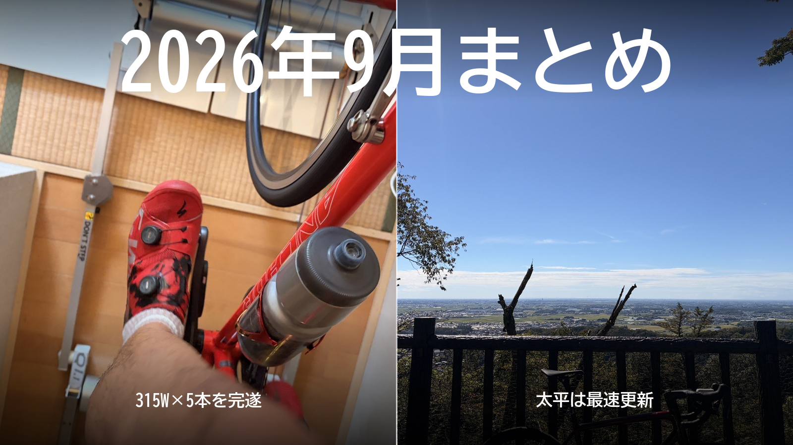

2026年9月まとめ。315W×5本を完遂、太平は最速更新
9月は雨が続いて、ローラーが中心の月だった。大きな出来事は2つ。ローラーで315W×5分×5本を完遂したこと。そして、太平の最速を更新したこと。

9月の走行距離と時間
外とローラーの内訳
ブログを始めてから初めて、ローラーの回数と距離が外を上回った。8月は外20回・ローラー10回だったのが、9月は逆転した。雨の日が続いて、1週間以上外を走れない時期もあったからである。8月より約200km、約10時間減り、獲得標高は半分以下になった。
トピック1：ローラーで315W×5分×5本を完遂した
目標の「ローラーで1時間300W」に向けて、300Wを超えたまま何分も耐える練習である。4回ともローラー（室内）でやった。きっかけは、雨で外のゴルビーができなかったこと。8日は天気が悪くてローラーになり、12日も本当は唐沢でゴルビーをやる予定だったが、朝から雨でローラーに変えた。外で5分×5本を走るゴルビーの代わりに、ローラーで315Wで5分踏み、5分休む。これを繰り返す。完遂するまでこれでいく、と決めて、4本を2回で完遂し、16日から5本に増やした。
| 日付 | 各本の平均（ローラー） | 結果 |
|---|---|---|
| 9月8日 | 313W / 315W / 309W / 302W | 4本目は約3分で終了 |
| 9月12日 | 316W / 318W / 317W / 322W | 4本を完遂 |
| 9月16日 | 316W / 315W / 317W | 5本の予定を、3本でやめた |
| 9月26日 | 310W / 317W / 313W / 311W / 314W | 5本を完遂 |
8日は久しぶりにえづいた。外の唐沢で同じ5分×5本を走るゴルビー（実走・8月は323〜332W）より10W以上低い設定なのに、ローラーでは揃わなかった。きついのに変わりはないが、12日は身構えていた練習で、最後の1本を上げる余裕まであった。
16日は、脚でも呼吸でもなく、気持ちが先に切れた。そして26日、4本目で「もう無理かも」と思いながらも、やめずに5本を踏み切った。ただ、4本目はギリギリで、余裕で揃えたわけではない。だからすぐ320Wには上げない。
トピック2：太平の最速を更新した
いつもの練習コースにある、7分前後の登り。8月に初めて7分を切った。
| 日付 | タイム | 平均 | 平均気温 |
|---|---|---|---|
| 8月17日 | 6分58秒 | 330W | 約29℃ |
| 8月31日 | 7分04秒 | 317W | 約28℃ |
| 9月3日 | 7分00秒 | 324W | — |
| 9月14日 | 6分45秒 | 340W | 27℃台 |
| 9月18日 | 6分49秒 | 333W | 20℃ |
| 9月22日 | 6分56秒 | 325W | 31℃ |
14日、最速を約13秒更新した。一瞬だけ前ももがうまく噛み合って、頑張っていないのによく進む感覚があった。18日はそれに次ぐ速さだったが、体感は14日のほうが楽だった。20℃と涼しかった18日より、14日のほうが速い。涼しければ速い、というほど単純ではないらしい。
22日は31℃の暑さの中でも7分を切った。8月は6分台が5回中1回だったのが、9月は4回中3回になった。
そのほかの練習
SSTは数字が多いので、表にまとめておく。
| 日付 | 内容 |
|---|---|
| 9月7日 | 20分×3：250W / 247W / 252W |
| 9月11日 | 20分×3：252W / 253W / 260W |
| 9月17日 | 20分×2：247W / 258W、3本目は約6分で終了 |
| 9月24日 | 20分×3：250W / 252W / 273W |
| 9月28日 | 30分×2：256W / 257W |
24日は、同じ250Wでも心拍が低く、3本目は20分×3で一番高い273Wまで上げられた。28日は20分×3のつもりが30分×2に変わり、持続力が一段上がってきた手応えがあった。9日には249Wで40分を一定で走ったが、最初は楽だったのに、終わる頃には何も残っていなかった。
10月への持ち越し
315W×5本は、5本とも315W以上に乗せて再現する。320Wに上げるのはその後。SSTは30分×2を256〜260Wで再現し、20分×3・30分×2・5分走の3つを軸に回す。太平は325〜340Wを安定させ、気温の違う日でも比べていく。